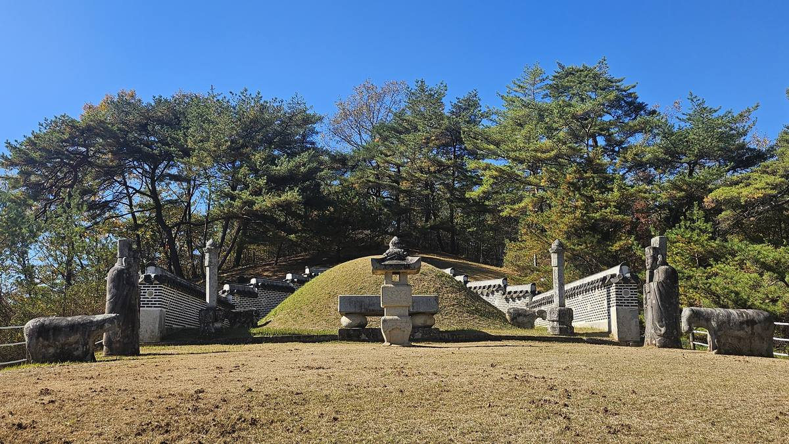
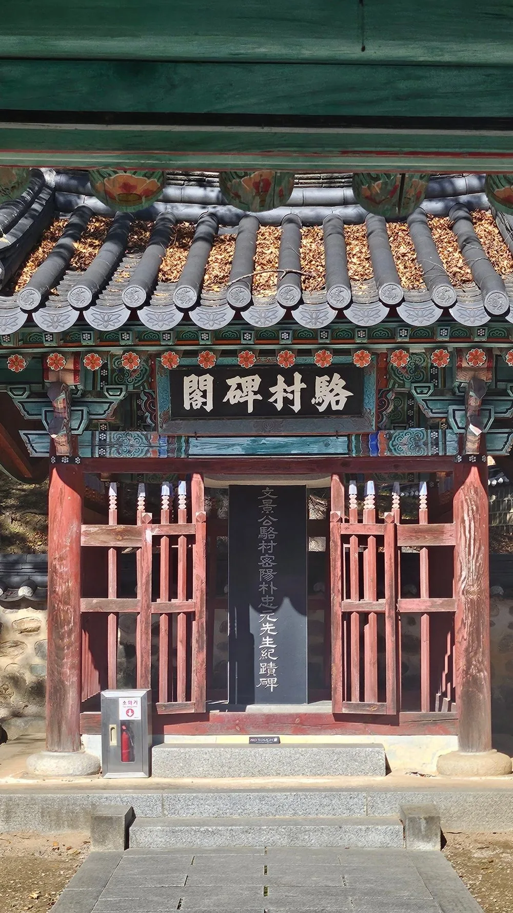
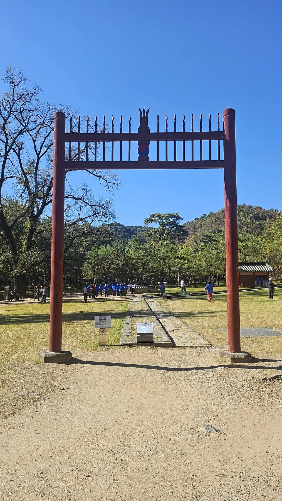
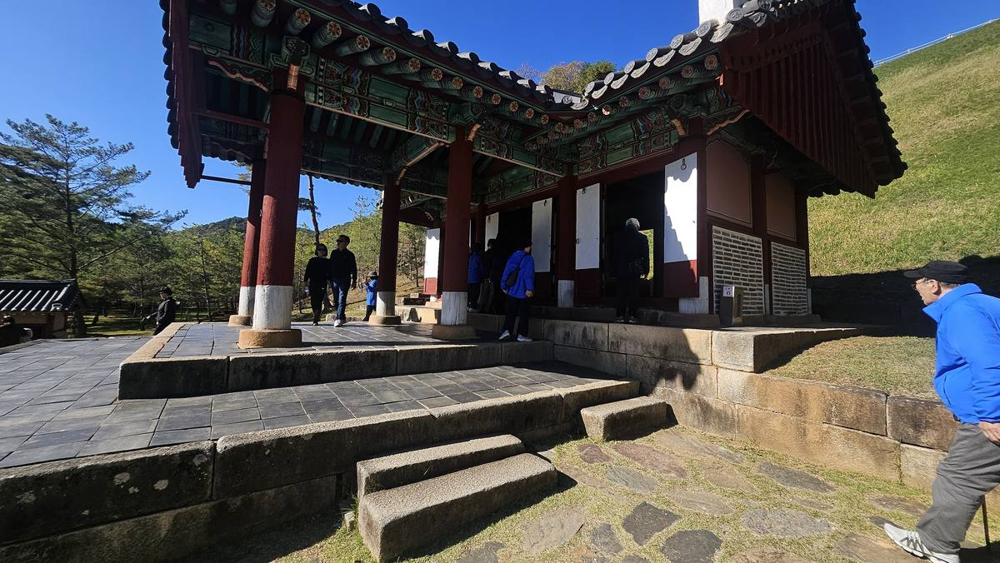
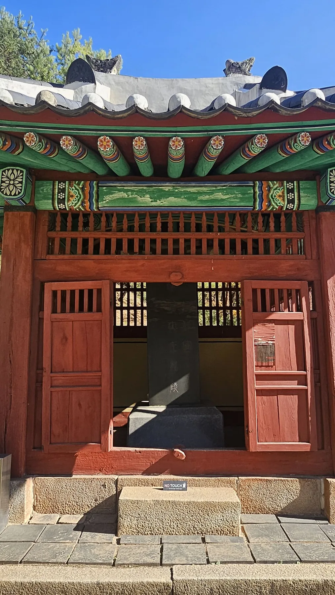
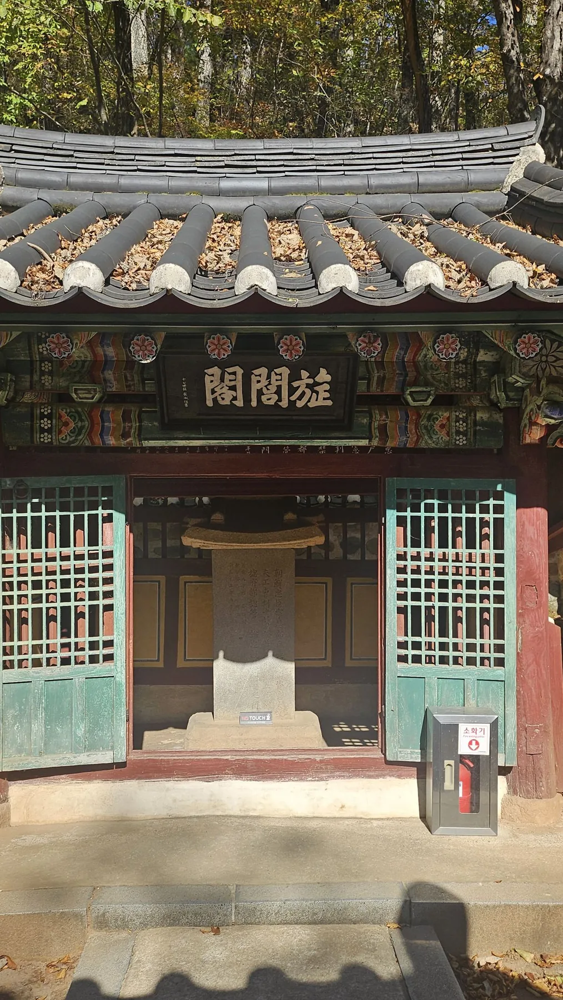
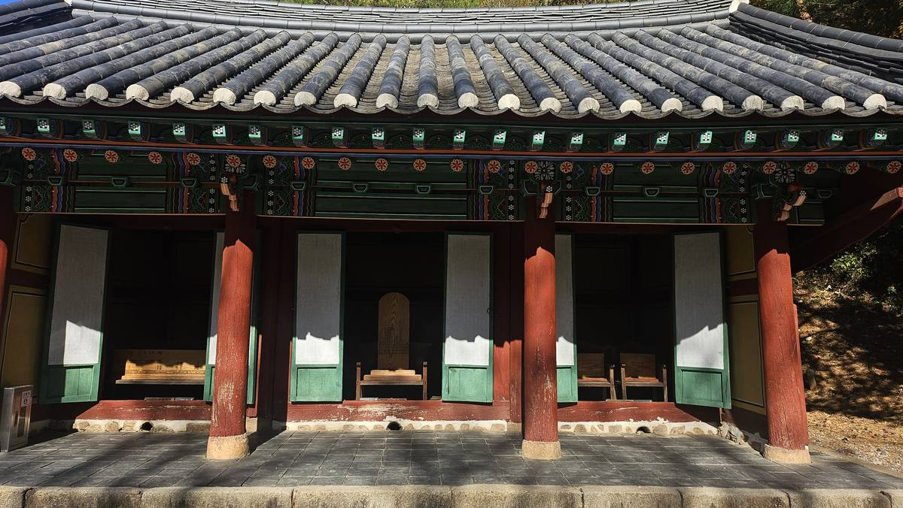

관풍헌에서 노산군의 생은 끝났다. 그러나 장릉에 오면 죽음보다 더 긴 시간이 보인다. 1457년의 장사, 1516년 국가 기록에 다시 나타난 무덤, 1681년 노산대군 추봉, 1698년 단종 복위, 그리고 정조 대의 배식단까지. 장릉은 한 번에 만들어진 왕릉이 아니라 후대가 단종과 그를 지킨 사람들을 차례로 다시 기억한 장소다.
1457년 당시의 사실, 1516년 《중종실록》이 전하는 영월 사람들의 말, 그리고 후대의 현창·전승을 구분한다. 특히 엄흥도를 ‘호장’으로 단정하거나 박충원이 무덤을 처음 발견했다고 서술하지 않는다. 1516년 실록에는 이미 무덤의 위치와 상태가 구체적으로 기록되어 있다.
1457년 — 왕릉이 아닌 무덤에서 시작하다
단종은 왕의 신분으로 죽지 못했다. 1457년 10월 《세조실록》은 그를 ‘노산군’이라 적고 죽음을 기록한다. 따라서 정상적인 국왕의 국장과 왕릉 조성 절차를 거친 무덤이 아니었다.
그런데 오늘 우리가 보는 장릉의 능침부터 바라보면 역사가 거꾸로 읽힌다. 왕릉의 석물과 봉분이 먼저 보이지만, 이곳의 출발은 훨씬 초라한 묘였다.

1516년 — 국가보다 먼저 ‘군왕의 묘’라 부른 사람들
장릉 서사의 가장 강한 기록은 단종 사후 59년 뒤인 1516년 《중종실록》에 나온다. 중종은 우승지 신상을 보내 노산군 묘에 치제하게 했다. 신상이 돌아와 전한 묘의 모습은 왕릉과 거리가 멀었다.
그러나 그 뒤의 문장이 더 중요하다. 고을 사람들이 ‘군왕의 묘’라 불러 어린아이도 알아보았다. 조정이 아직 단종을 왕으로 복위시키기 훨씬 전, 영월 사람들의 기억 속에서는 이미 ‘군왕’이었다.
같은 기사에서 영월 사람들은 단종이 죽었을 때 ‘고을 아전 엄흥도’가 찾아가 곡하고 관을 갖추어 장사했다고 전했다. 이것이 엄흥도에 관한 이른 시기의 핵심 사료다.
1516년 실록은 엄흥도를 ‘고을 아전’이라고 적는다. 오늘날 안내 자료에서 흔히 쓰는 ‘영월 호장’이라는 호칭과, 목숨을 걸고 시신을 수습했다는 극적인 서사는 후대 현창 과정에서 강화된 층위가 있으므로 본문에서는 구분해 쓴다.
무덤을 찾은 것이 아니라, 무덤을 다시 돌보기 시작했다
여기서 장릉 설명에서 자주 생기는 혼동을 정리할 필요가 있다. 일부 관광 안내에는 1516년 또는 1541년에 ‘묘를 찾았다’는 식의 표현이 보인다. 그러나 1516년 실록은 이미 묘의 위치를 ‘영월군 서쪽 5리 길 곁’이라고 구체적으로 적고 있다. 따라서 1541년 영월군수 박충원의 역할은 잊힌 무덤을 최초 발견했다기보다 묘를 정비하고 제향한 과정으로 보는 것이 사료에 더 잘 맞는다.
현재 장릉에는 박충원의 행적을 기리는 낙촌비각이 남아 있다. 현장 시설 자체도 후대가 단종의 묘를 지킨 사람을 다시 기억한 결과다.

1698년 — 무덤의 신분이 바뀌다
숙종 24년, 노산대군은 마침내 왕으로 복위되었다. 묘호는 단종(端宗), 능호는 장릉(莊陵)으로 정해졌다. 1457년 죽음에서 241년이 지난 뒤였다.
중요한 것은 완전히 새로운 왕릉을 다른 곳에 만든 것이 아니라는 점이다. 영월 사람들이 기억하고 국가가 차츰 돌보아 온 바로 그 무덤이 왕릉의 지위를 얻었다. 그래서 장릉의 공간은 ‘완성된 왕릉의 시작’보다 무덤의 신분이 바뀐 역사를 보여준다.



엄흥도 — 장사한 사람에서 국가가 기리는 충신으로
1516년 기록에서 엄흥도는 영월 사람들이 기억한 ‘고을 아전’이었다. 시간이 흐르면서 그의 행적은 국가적 충절의 표상으로 확대되었다. 장릉에 엄흥도 정려각이 자리한 이유도 이 후대의 현창 과정과 연결된다.

따라서 장릉에서 엄흥도를 보는 방법은 두 층을 겹치지 않는 것이다. 1516년 실록이 확인해 주는 장사 이야기와 후대에 형성된 충신 엄흥도의 기억. 둘을 나누어 볼 때 오히려 엄흥도가 어떻게 역사 속 인물에서 기억의 상징으로 커졌는지가 보인다.
장판옥과 배식단 — 기억은 단종 한 사람에서 268인으로 넓어졌다
장릉이 다른 왕릉과 뚜렷하게 다른 지점이 여기다. 1791년 정조는 단종에게 충절을 지킨 사람들을 정리해 배식하도록 했다. 처음 정단 32인과 별단 198인을 정했고, 이후 순조 대까지 대상이 더해져 오늘날 268위로 확대되었다.

장판옥의 268위에는 종실과 재상·사육신 같은 이름난 인물만 있는 것이 아니다. 조정 신하뿐 아니라 환관·군관·노비, 궁녀와 무녀까지 포함된다. 단종의 복권이 한 왕의 명예 회복을 넘어 그 과정에서 희생된 사람들의 기억을 다시 국가의 역사 안으로 끌어들이는 작업으로 확장된 것이다.
한국민족문화대백과사전의 「배식단」은 정조가 《어정배식록》을 편찬하고 정단 32인·별단 198인을 정했으며, 이후 추가되어 268위가 되었다고 설명한다. 장릉의 배식단과 장판옥은 ‘처음부터 있던 왕릉 시설’이 아니라 복위 이후에도 계속된 역사 재평가의 산물이다.
그래서 장릉은 ‘복권의 왕릉’이다
장릉에서 보이는 시간은 한 방향으로 흐르지 않는다. 1457년의 죽음에서 시작해 1516년의 기억, 후대의 묘역 정비, 1681년 노산대군 추봉, 1698년 단종 복위, 그리고 정조 대 충신 현창까지 계속 덧붙여졌다.
이 때문에 장릉에서 가장 중요한 것은 “누가 단종을 묻었는가” 하나만이 아니다. 누가 기억했고, 국가가 언제 그 기억을 받아들였으며, 그 기억의 범위가 어떻게 넓어졌는가가 이 왕릉의 진짜 이야기다.
무덤은 왕릉이 되었다. 그러나 아직 한 자리가 남았다.
1698년 영월의 묘는 장릉이 되었고, 노산군은 다시 단종이 되었다.
하지만 조선에서 왕으로 완전히 돌아온다는 것은 능호를 얻는 것만을 뜻하지 않았다. 왕조의 조상으로서 신주가 종묘에 들어가야 했다.
영월에서 육신의 자리가 복권되었다면, 이제 서울에서는 왕조의 계보가 복원되어야 한다.
단종편의 마지막 답사는 종묘 영녕전이다.
능침 · 정자각 · 단종비각 · 엄흥도 정려각 · 장판옥 · 배식단 · 박충원 낙촌비각
서사의 연결
⑥ 청령포·관풍헌 → ⑦ 장릉: 무덤과 기억의 복권 → ⑧ 종묘 영녕전: 왕조 계보로의 귀환
① 《중종실록》 1516년 12월 10일: 묘의 위치·상태, ‘군왕의 묘’, ‘고을 아전 엄흥도’의 장사 전언.
② 국가유산포털 「영월 장릉」: 장릉의 지정·시대 및 기본 성격.
③ 조선왕조실록 단종실록 해제: 1681년 노산대군 추봉, 1698년 단종 복위와 장릉 능호.
④ 한국민족문화대백과사전 「배식단」: 1791년 정조의 배식 제도와 이후 268위로 확대된 과정.
⑤ 현장 안내·공공 관광자료: 박충원 낙촌비각, 엄흥도 정려각, 장판옥 등 현존 시설의 성격. 관광자료의 ‘묘를 찾았다’ 같은 표현은 1516년 실록과 충돌하는 경우 실록을 우선했다.